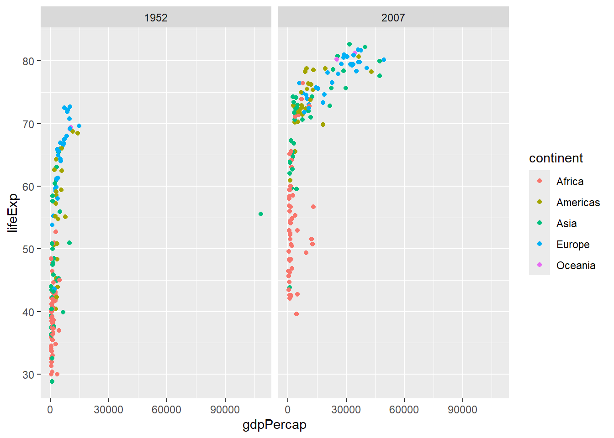
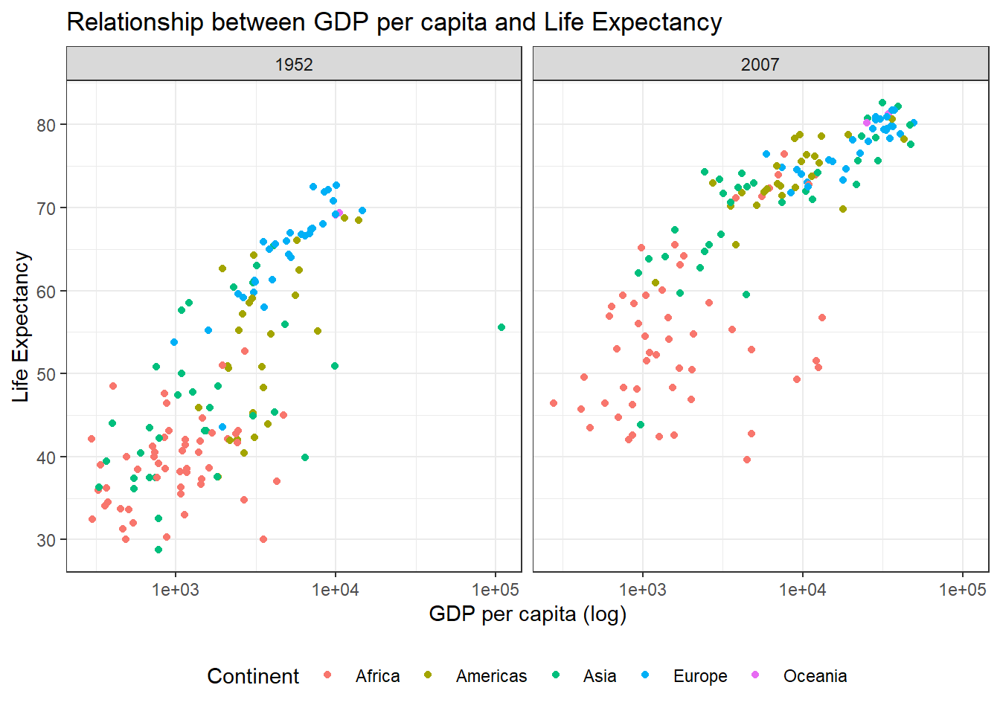
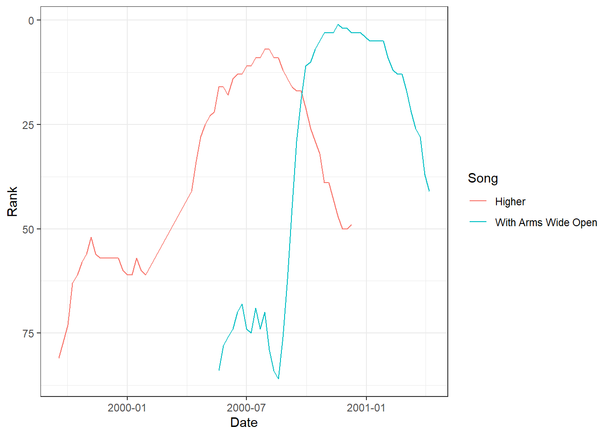

library(tidyverse)
library(gapminder)
gapminder_2007 <- gapminder %>%
filter(year == 2007)
ggplot(data = gapminder_2007)
A visualização de dados desempenha um papel fundamental na compreensão e comunicação de informações complexas. Ao transformar números e estatísticas em gráficos, tabelas e outras representações visuais, podemos identificar padrões, tendências e insights que podem não ser imediatamente aparentes em conjuntos de dados brutos. Além disso, a visualização de dados facilita a comunicação de resultados e descobertas para uma audiência mais ampla, tornando informações complexas mais acessíveis e compreensíveis.
Ele é baseado na gramática dos gráficos (grammar of graphics - GG), veja Wilkinson (2012). A gramática dos gráficos é um conjunto de princípios e conceitos que descrevem a estrutura e as regras para criar gráficos de forma consistente e eficaz. A GG é um framework para visualização de dados que desmembra cada componente de um gráfico em elementos individuais, criando camadas distintas. Usando o sistema GG, podemos construir gráficos passo a passo para obter resultados flexíveis e personalizáveis. Cada aspecto do gráfico, como pontos, linhas, cores e escalas, é tratado como uma peça separada, permitindo um controle detalhado sobre a aparência e o conteúdo do gráfico final.

ggplotO pacote mais conhecido de visualização de dados em R é o ggplot2, que é baseado na gramática dos gráficos. O ggplot2 permite criar uma ampla variedade de gráficos, incluindo gráficos de dispersão, linhas, barras, histogramas, entre outros, de forma simples e flexível. Com o ggplot2, você pode personalizar praticamente todos os aspectos do gráfico, desde a forma e a cor dos pontos até a escala dos eixos e a aparência do plano de fundo.
Para exemplificar o uso do ggplot, vamos considerar os dados gapminder, Rosling (2012).
A função ggplot() inicializa um gráfico ggplot2 e define os dados que serão usados.
library(tidyverse)
library(gapminder)
gapminder_2007 <- gapminder %>%
filter(year == 2007)
ggplot(data = gapminder_2007)
Esse código cria um gráfico utilizando os dados do gapminder apenas para o ano de 2007. Apenas isso. Não há instruções extras sobre o que exibir em cada eixo (estética do gráfico).
O mapeamento estético (aes) no ggplot2 é uma função que permite vincular variáveis de um conjunto de dados às propriedades visuais de um gráfico, como cor, forma, tamanho e posição. Por meio do mapeamento estético, podemos controlar como os dados são representados visualmente no gráfico.
Por exemplo, ao criar um gráfico de dispersão, podemos mapear a variável x (horizontal) e a variável y (vertical) do conjunto de dados às coordenadas do gráfico.
ggplot(data = gapminder_2007,
mapping = aes(x = gdpPercap, y = lifeExp))
Esse código define um gráfico de dispersão utilizando os dados do gapminder apenas para o ano de 2007. O eixo x representa o PIB per capita (gdpPercap) e o eixo y representa a expectativa de vida (lifeExp). Apenas isso. Não há instruções extra no techo de código sobre o fomato (geometria) que deve ser usado para exibir os dados.
A geometria refere-se aos elementos visuais que compõem um gráfico, como pontos, linhas, barras e áreas. Cada tipo de gráfico tem sua própria geometria correspondente, e é especificada pela função geom_*, seguida pelo tipo de geometria desejado.
Por exemplo, para criar um gráfico de dispersão, usamos a geometria geom_point(), enquanto para criar um gráfico de barras, usamos a geometria geom_bar().
ggplot(data = gapminder_2007,
mapping = aes(x = gdpPercap, y = lifeExp)) +
geom_point()
Cada geometria tem seus próprios parâmetros específicos que podem ser ajustados para personalizar a aparência do gráfico, como cor, tamanho, preenchimento e transparência.
Veja que para colorir cada ponto do gráfico de dispersão de acordo com o continente, basta adicionar no mapeamento estético color = continent.
ggplot(data = gapminder_2007,
mapping = aes(x = gdpPercap, y = lifeExp, color = continent)) +
geom_point()Abaixo, mostramos outras possíveis geometrias. Algumas alterações foram feitas na forma como as funções do ggplot são usadas. Propositalmente não foi adicionado texto descritivoos pois essas alterações devem ser fáceis de interpretar.
geom_line():
# Filtrar dados para o Brasil
dados_pais <- gapminder %>%
filter(country == "Brazil")
# Criar gráfico de linha
ggplot(data = gapminder %>%
filter(country == "Brazil"),
aes(x = year, y = lifeExp)) +
geom_line()
geom_bar():
# Criar gráfico de barras
ggplot(data = gapminder_2007, aes(x = continent, y = gdpPercap)) +
geom_bar(stat = "summary", fun = "mean")
geom_boxplot():
ggplot(data = gapminder_2007, aes(x = continent, y = lifeExp)) +
geom_boxplot()
geom_text():
gapminder_2007 %>%
group_by(continent) %>%
summarise(mean_lifeExp = mean(lifeExp),
mean_gdpPercap = mean(gdpPercap)) %>%
ggplot(aes(x = mean_gdpPercap, y = mean_lifeExp, label = continent)) +
geom_point() +
geom_text(vjust = -0.5, hjust = 0.5)Note que estamos combinando duas geometrias em um único gráfico (ponto e texto). Os rótulos de texto são adicionados aos pontos usando a geometria geom_text(), com os parâmetros vjust e hjust definindo a posição vertical e horizontal do texto, respectivamente:
o parâmetro vjust ajusta o alinhamento vertical do texto em relação ao ponto. Um valor negativo (-0.5, por exemplo) move o texto acima do ponto, enquanto um valor positivo move o texto abaixo do ponto.
o parâmetro hjust ajusta o alinhamento horizontal do texto em relação ao ponto. Um valor de 0.5 centraliza o texto horizontalmente em relação ao ponto.
As facetas (facet) referem-se à capacidade de dividir um gráfico em múltiplas visualizações com base em uma ou mais variáveis categóricas. Isso permite comparar as relações entre variáveis em diferentes segmentos dos dados.
As facetas são adicionadas usando a função facet_wrap() para criar uma matriz de painéis com base em uma variável categórica ou facet_grid() para criar uma grade de painéis com base em duas variáveis categóricas.
Por exemplo, podemos usar facetas para criar um gráfico de dispersão separado para dois anos distintos, permitindo comparar as relações entre o PIB per capta e a expectativa de vida nesses dois anos.
gapminder_anos <- gapminder %>%
filter(year == 1952 | year == 2007)
ggplot(data = gapminder_anos,
mapping = aes(x = gdpPercap, y = lifeExp, color = continent)) +
geom_point() +
facet_wrap(~year)
As coordenadas em ggplot2 determinam como os dados são mapeados em um espaço gráfico. Isso inclui a escala dos eixos x e y, bem como qualquer transformação ou ajuste aplicado aos dados. As coordenadas afetam a aparência geral do gráfico, incluindo sua orientação, proporção e escala.
Para definir limites nos eixos x e y, podemos usar a função coord_cartesian() para controlar quais intervalos de valores são exibidos no gráfico. Isso é útil quando queremos focar em uma parte específica dos dados ou evitar que outliers influenciem a escala dos eixos.
ggplot(data = gapminder_anos,
mapping = aes(x = gdpPercap, y = lifeExp, color = continent)) +
geom_point() +
facet_wrap(~year) +
coord_cartesian(ylim = c(40, 83))É possível aplicar a escala logarítmica aos eixos também. Isso é útil quando os dados têm uma ampla variação de valores e estamos interessados em destacar diferenças em uma ampla gama de valores, como em dados de renda ou PIB. Para fazer isso, basta utilizar a função scale_*_log10():
ggplot(data = gapminder_anos,
mapping = aes(x = gdpPercap, y = lifeExp, color = continent)) +
geom_point() +
facet_wrap(~year) +
scale_x_log10()Os temas controlam os aspectos visuais dos gráficos, como títulos, legendas, eixos e cores de fundo. Os temas pré-definidos, como theme_bw(), theme_minimal(), theme_classic() etc., oferecem estilos visuais consistentes que podem ser aplicados aos gráficos para obter uma aparência específica.
ggplot(data = gapminder_anos,
mapping = aes(x = gdpPercap, y = lifeExp, color = continent)) +
geom_point() +
facet_wrap(~year) +
scale_x_log10() +
theme_bw()
Apague a última linha do exemplo acima, digite theme_, aperte a tecla tab e experimente os diferentes temas pré-definidos no ggplot.
Além disso, podemos definir praticamente todos os aspectos do gráfico. Por exemplo, para trocar a posição da legenda para baixo, podemos usar a função theme(legend.position = "bottom"). Para alterar o tamanho da fonte, podemos usar a função theme(text = element_text(size = 12)). Essas definições podem ser combinadas em uma única chamada da função theme(), veja abaixo.
ggplot(data = gapminder_anos,
mapping = aes(x = gdpPercap, y = lifeExp, color = continent)) +
geom_point() +
facet_wrap(~year) +
scale_x_log10() +
theme_bw() +
theme(legend.position = "bottom",
text = element_text(size = 12))A função labs() é responsável por personalizar rótulos e títulos em gráficos. No exemplo abaixo, renomeamos os eixos x e y e atribuimos um nome mais descritivo para a legenda de cores, que neste caso representa o continente.
ggplot(data = gapminder_anos,
mapping = aes(x = gdpPercap, y = lifeExp, color = continent)) +
geom_point() +
facet_wrap(~year) +
scale_x_log10() +
labs(x = "PIB per capita (log)",
y = "Expectativa de vida",
color = "Continente",
title = "Relação entre PIB per capita e Expectativa de Vida") +
theme_bw() +
theme(legend.position = "bottom")
O parâmetro alpha controla a opacidade dos elementos geométricos, variando de 0 a 1. Por exemplo, geom_point(alpha = 0.5) torna os pontos semi-transparentes, o que pode ser útil para visualizar sobreposições de dados em um gráfico de dispersão.
ggplot(data = gapminder_anos,
mapping = aes(x = gdpPercap, y = lifeExp, color = continent)) +
geom_point(alpha = 0.5) +
facet_wrap(~year) +
scale_x_log10() +
labs(x = "PIB per capita (log)",
y = "Expectativa de vida",
color = "Continente",
title = "Relação entre PIB per capita e Expectativa de Vida")
Para escolher cores específicas para os níveis de uma variável categórica, podemos utilizar a função scale_color_manual() para atribuir manualmente cores a cada nível da variável.
ggplot(data = gapminder_anos,
mapping = aes(x = gdpPercap, y = lifeExp, color = continent)) +
geom_point(alpha = 0.5) +
facet_wrap(~year) +
scale_x_log10() +
scale_color_manual(values = c("blue", "green", "orange", "purple", "red"))+
labs(x = "PIB per capita (log)",
y = "Expectativa de vida",
color = "Continente",
title = "Relação entre PIB per capita e Expectativa de Vida")
Você pode usar paletas de cores do pacote RColorBrewer usando a função scale_color_brewer().
ggplot(data = gapminder_anos,
mapping = aes(x = gdpPercap, y = lifeExp, color = continent)) +
geom_point(alpha = 0.5) +
facet_wrap(~year) +
scale_x_log10() +
scale_color_brewer(palette = "Set1")+
labs(x = "PIB per capita (log)",
y = "Expectativa de vida",
color = "Continente",
title = "Relação entre PIB per capita e Expectativa de Vida")
A vantagem de usar as paletas de cores do RColorBrewer é que elas foram cuidadosamente projetadas para serem perceptualmente distintas e adequadas para representar diferentes grupos ou categorias em gráficos. Isso significa que as cores em uma paleta são mais facilmente distinguíveis umas das outras, mesmo quando impressas em preto e branco ou quando vistas por pessoas com deficiências visuais. Veja todas paletas disponíves aqui
Existem alguns pacotes extras que funcionam como extensões do ggplot2. Apresentamos alguns nessa seção.
patchworkO pacote patchwork é usada para combinar múltiplos gráficos ggplot2 em uma única visualização. Ele permite criar layouts flexíveis e complexos, adicionando, organizando e ajustando gráficos individualmente.
# Instalar o pacote patchwork (apenas se ainda não estiver instalado)
install.packages("patchwork")Depois de carregar o pacote, você pode usar o operador + para combinar gráficos ggplot2 em uma única visualização.
Aqui está um exemplo simples criando dois gráficos separados e, em seguida, são combinados usando o patchwork:
library(patchwork)Warning: package 'patchwork' was built under R version 4.2.3plot1 <- ggplot(data = gapminder_2007,
mapping = aes(x = gdpPercap, y = lifeExp)) +
geom_point(alpha = 0.5) +
labs(x = "PIB per capita (log)",
y = "Expectativa de vida em 2007",
title = "Relação entre PIB per capita e Expectativa de Vida") +
theme_classic()
plot2 <- ggplot(data = gapminder_2007,
mapping = aes(lifeExp)) +
geom_histogram() +
labs(title = "Histograma da expectativa de vida",
x = "Expectativa de Vida em 2007",
y = "Frequência") +
theme_classic()
plot1 + plot2
ggthemesO pacote ggthemes é uma extensão do ggplot2 que fornece uma variedade de temas pré-definidos para personalizar a aparência dos gráficos. Veja a documentação aqui.
# Instalar o pacote ggthemes (apenas se ainda não estiver instalado)
install.packages("ggthemes")Depois de carregar o pacote, você pode aplicar qualquer um dos temas disponíveis aos seus gráficos ggplot2 usando a função theme_*(). No exemplo abaixo, são criadas três versões do mesmo gráfico com temas diferentes. Os operadores + e / foram usados para definir como os gráficos serão exibidos.
# Carregar o pacote ggthemes
library(ggthemes)Warning: package 'ggthemes' was built under R version 4.2.3plot0 <- ggplot(data = gapminder_2007,
mapping = aes(x = gdpPercap, y = lifeExp)) +
geom_point(alpha = 0.5) +
labs(x = "PIB per capita (log)",
y = "Expectativa de vida em 2007")
plot1 <- plot0 + theme_economist()
plot2 <- plot0 + theme_excel()
plot3 <- plot0 + theme_stata()
plot1 + (plot2 / plot3)
plotlyO pacote plotly oferece recursos para criar gráficos interativos. Para adicionar interação ao gráfico fornecido, podemos usar a função ggplotly() para converter um gráfico criado com ggplot2 em um gráfico interativo. Utilize o comando install.packages("plotly") caso não tenha o pacote instalado.
library(plotly)Warning: package 'plotly' was built under R version 4.2.3grafico <- ggplot(data = gapminder_anos,
mapping = aes(x = gdpPercap, y = lifeExp,
color = continent, text = country)) +
geom_point(alpha = 0.5) +
facet_wrap(~year) +
scale_x_log10() +
labs(x = "PIB per capita (log)",
y = "Expectativa de vida",
color = "Continente",
title = "Relação entre PIB per capita e Expectativa de Vida")ggplotly(grafico) Quando você estiver explorando diferentes tipos de gráficos para visualizar seus dados, o site Data to Viz pode ser uma ferramenta valiosa. Ele fornece uma galeria completa de tipos de gráficos e oferece orientações sobre quando e como usar cada um deles. Além disso, o site oferece exemplos específicos de como criar esses gráficos usando diferentes bibliotecas, como ggplot2 em R e matplotlib em Python.
1. Vamos utilizar os dados da Billboard que foram apresentados na Seção 3.7. Sua tarefa é reproduzir os gráficos abaixo utilizando técnicas de processamento de dados com dplyr e visualização de dados com ggplot.
a) O gráfico abaixo mostra o histórico de cada musica no ranking ao longo das semanas.

b) O gráfico abaixo é uma pequena alteração do apresentado no item a), no eixo x é apresentada a data que a música entrou no ranking.

c) O gráfico abaixo mostra o histórico de duas músicas no ranking: “Higher” e “With Arms Wide Open”.

2. Utilize os dados gerados na Seção 2.2.1 que representam o preço de fechamento de uma ação e reproduza o gráfico abaixo, mostrando a evolução da média móvel ao longo do tempo.

3. (Desafio) Reproduza o gráfico de dispersão abaixo que foi apresentado na Seção 2.3.

4. Reproduza a figura apresentada na Seção 3.5.6.